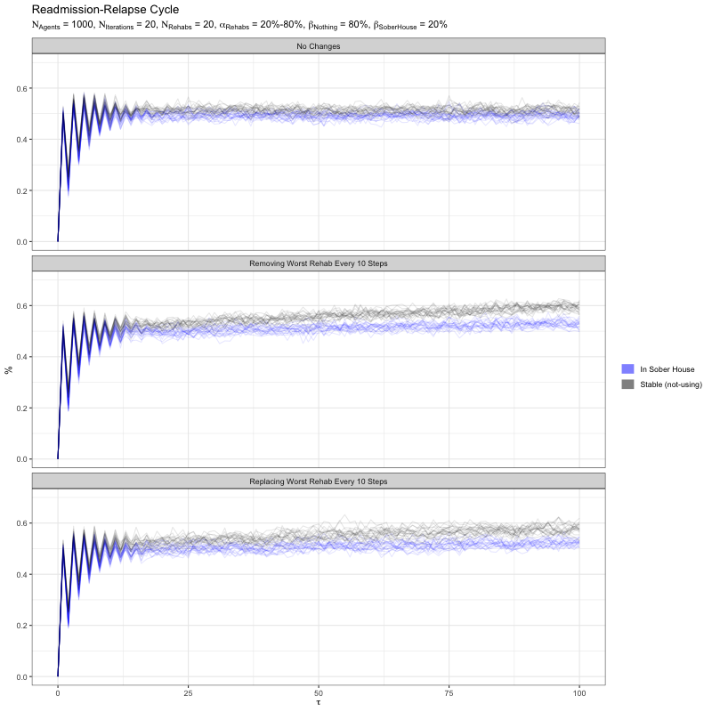
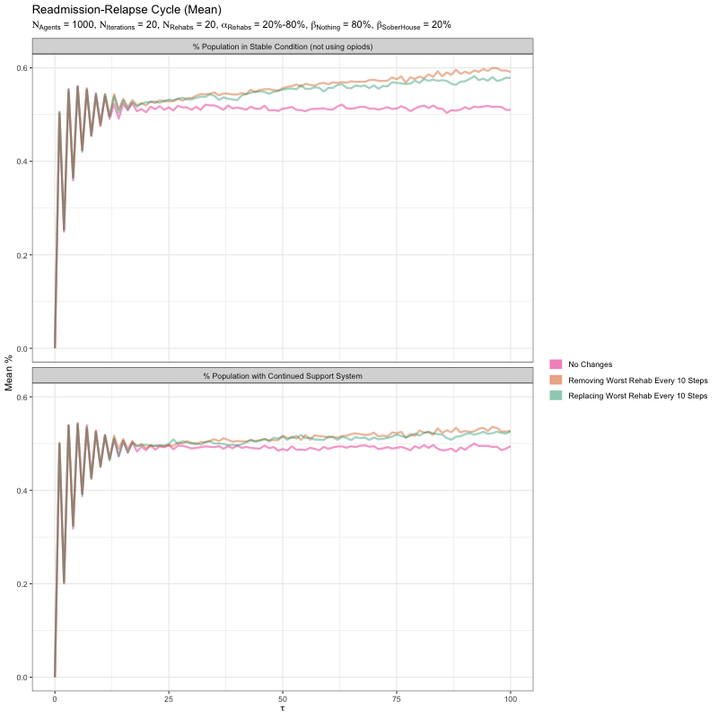

In May 2018 John Oliver covered the topic of rehabs. Oliver introduces the concept that addiction is an illness that should be treated as a complex condition similar to a disease or a chronic condition. Indeed, there is a prevalent idea that addiction is a life-long disease and an addict who is not using any substance is "stable", but can at any time revert to an "unstable" state by using a substance again. A common way of treating addiction are periods in rehab. Rehab, he mentions, is a multi-billion dollar industry with no (US) federal standards.
However, despite these lack of federal standards the US government passed the Mental Health Parity and Addiction Equality Act (MHPAEA) which generally prevents health insurance providers from imposing less favorable benefit limitations on substance use disorder than on medical/surgical benefits. Providing health care to those who need it is generally a good thing. The problem arises when we consider that the insurance payments enter an unregulated market where unqualified facilities are likely to receive this payment.
This article will act as a thought experiment where we try to model what is known as the "Florida Shuffle" - a phenomenon where patients are released from rehab only to return. In an unregulated market, where rehab facilities self-report their own success metrics, money from insurers can go to any rehab facility with no consideration to its effectiveness. This means there is less incentive to "stabilize" an addict and more incentive to keep the addict "unstable" so that the patient (and his or her insurance money) can return.
We propose an agent based model that factors three separate types of agents.
These are the rules to the model. Rules are applied at time interval 𝜏 which represents 30 days or the average stay at a rehab facility.
If we follow the rules listed above, we eventually see a plateau representing the percent of addicts in a stable state. However, we can interact with the model and introduce "interventions" in an attempt to increase the percentage of addicts in a stable state. This article suggests two interventions:
Below is an interactive game that simulates the behavior explained above. There are two different games that can be played: one for each intervention described above. The system we are analyzing with an intervention is shown in black. A counterfactual analyss is also provided in red. The counterfactual represents the system as if no intervention took place. The α and β for each rehab and post-rehab are randomly chosen for each game.
We ran a controlled simulation similar to the one shown above. The controlled simulation contained 1000 addicts, 20 rehab centers, and 2 post-rehab centers. We conducted the simulation over 100 intervals. The simulation was repeated 20 times. The rehabs each had a randomly selected α between .2 and .8. The two post-rehab facilities had a β of .2 and .8. The α and β for the rehab and post-rehab facilities stay consistent over all 20 iterations.
If we examine the mean result for all 20 iterations we can see that both the "removal" and "replacement" games have similar effects on the system.
This model is just a thought experiment. We do not currently have data on how successful a rehab facility is. However, if most addicts pay for rehab services with insurance, then we can potentially get this information from the insurance providers. That is, insurance companies know which addict is returning to rehab centers and which rehab center they are returning to. Insurance companies have an incentive for addicts to reach a stable state because they want to minimize money they spend at rehab facilities. If we can get access to this information from the insurance companies, then we can validate this model with real-world data.